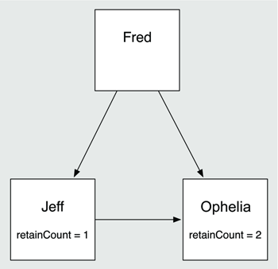
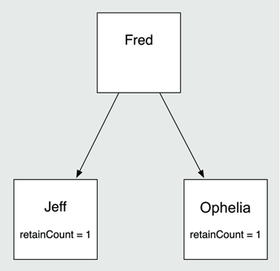
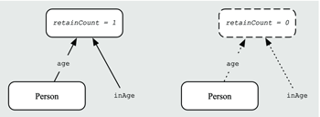
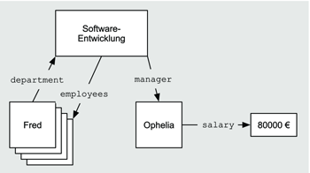

Zum Online-Shop
Zum Online-Shop
2.4 Speicherverwaltung, Propertys und Key-Value-Coding
Bevor Sie im nächsten Kapitel mit der Programmierung einer umfangreicheren iOS-App anfangen, steht noch das Thema Speicherverwaltung auf dem Plan. Während Mac OS X bereits über eine automatische Speicherverwaltung verfügt (den Garbage Collector), ist bei iOS noch Handarbeit angesagt. Allerdings hört sich das wesentlich schlimmer an, als es ist.
Im Gegensatz zur wirklich echten Handarbeit bei der Speicherverwaltung, wie sie bei der Verwendung von C oder C++ notwendig ist, beschränkt sich die Speicherverwaltung bei der iOS-Programmierung auf die Buchführung über benötigte und nicht mehr benötigte Objekte. Alles andere erledigt die Laufzeitumgebung automatisch.
Die Lebenszeit eines dynamisch erzeugten Objekts wird im Hauptspeicher, dem Heap, durch die Technik des Referenzenzählens bestimmt. Dabei gibt es zwei mögliche Fehler: Speicherlecks (Leaks) oder Dangling Pointer.
Ein Leck entsteht, wenn Sie ein nicht mehr verwendetes Objekt nicht freigegeben, was dazu führt, dass es unnötig Speicherplatz belegt. Zu viele Lecks belegen mit der Zeit den gesamten verfügbaren Hauptspeicher des Rechners und lassen das Programm abstürzen. Das ist wie in einem All-Inclusive-Hotel auf den Balearen: Auf allen Sonnenliegen liegt schon vor dem Frühstück ein Handtuch, und für Sie ist keine mehr frei.
Ein Dangling Pointer hingegen ist das Gegenteil: ein Verweis auf ein Objekt, das bereits freigegeben wurde. Findet innerhalb einer App ein Zugriff auf ein bereits freigegebenes Objekt statt, führt das in der Regel zu einem Absturz.
In Cocoa Touch gibt es feste Regeln für die Speicherverwaltung. Wenn Sie sich daran halten, werden Sie viele Speicherverwaltungsfehler schon bei der Programmierung vermeiden können. Die Speicherverwaltung basiert auf dem Referenzenzählen, das das nachfolgende Beispiel veranschaulichen soll.
Ein Hausarzt schickt seinen Patienten ins Krankenhaus. Dort untersuchen und behandeln ihn verschiedene Fachärzte, indem er bei jedem Arzt die Sprechstunde besucht. Die Ärzte schicken den Patienten zu weiteren Ärzten im Krankenhaus, bestellen ihn zu erneuten Untersuchungen oder Behandlungen ein oder teilen ihm ihren Befund mit. Da der Patient glücklicherweise nicht schwer erkrankt ist, fallen die Befunde immer negativ aus beziehungsweise sind die Behandlungen immer erfolgreich. Die Frage ist nun: Wann weiß der Patient, dass er geheilt und entlassen ist?
Ein Arzt kann nicht alleine über die Entlassung des Patienten entscheiden. Wenn aber andererseits kein Arzt den Patienten entlässt, belegt der Patient weiter ein Bett im Krankenhaus, und irgendwann kann es keine weiteren Patienten mehr aufnehmen, da lauter gesunde Menschen die Betten belegen.
Wie kann die Klinikleitung dieses Problem lösen? Die Ärzte können sich natürlich regelmäßig abstimmen und zu gegebener Zeit dem Patienten seine Entlassung mitteilen. Das wäre aber aufwendig, und die Ärzte verbrächten viel Zeit mit der Abstimmung, in der sie besser andere Patienten behandeln könnten.
Eine andere Möglichkeit besteht darin, dem Patienten einen Laufzettel zu geben. Darauf bekommt jeder Arzt, den der Patient noch aufsuchen muss, einen Strich. Wenn ein Arzt mit der Behandlung des Patienten fertig ist, entfernt er diesen Strich wieder von dem Zettel. Der Patient darf nach Hause gehen, wenn kein Strich mehr auf dem Zettel ist.
In diesem Beispiel ist der Patient ein Bild für ein dynamisch erzeugtes Objekt, die Ärzte sind Verweise auf dieses Objekt, und die Entlassung aus dem Krankenhaus entspricht der Freigabe des Objekts aus dem Speicher. Und so funktioniert es auch unter iOS: So wie die einzelnen Ärzte den Patienten nicht entlassen können, können die einzelnen Referenzen nicht entscheiden, wann das von ihnen referenzierte Objekt freigegeben werden soll.
Wenn das Objekt zu früh freigegeben wird, entsteht im Programm ein Dangling Pointer. Im Krankenhausbeispiel würde ein Arzt vergebens auf den Patienten warten, der schon zu Hause gemütlich im Sessel sitzt. Analog entsteht im Hauptspeicher ein Leck, wenn keine Referenz das referenzierte Objekt endgültig freigibt. Das entspricht dem gesunden Patienten im Krankenhaus, den kein Arzt mehr sehen will. Da er nie die Information bekommt, dass er gehen darf, sitzt er bis zum Sankt-Nimmerleins-Tag im Krankenhaus.
Die zentrale Frage der Speicherverwaltung unter iOS dreht sich also um die Frage, wann ein Objekt freigegeben werden kann. Verweise in Objective-C beziehungsweise C sind einfach nur Speicheradressen, die von beliebigen Programmbereichen auf das Objekt zeigen können. Eine Lösung, die auf die selbstständige Abstimmung dieser Zeiger setzt, kommt deswegen nicht infrage. Die Ärzte im Krankenhaus haben auch Besseres zu tun, als sich ständig darüber auszutauschen, welcher Patient nun nach Hause darf und welcher noch bleiben muss. Diesen Mehraufwand würde keine Krankenkasse bezahlen.
2.4.1 Referenzenzählen in Objective-C
Daher bekommt jedes Objekt in Objective-C eine Strichliste in Form eines Zählers, sodass sich jedes Objekt selber merken kann, wie viele Verweise auf es zeigen. Im Gegensatz zum Laufzettel des Patienten zählt das Objekt allerdings nur die Anzahl der Verweise. Es merkt sich nicht, welche Verweise auf es zeigen. Anhand des Zählers kann es aber feststellen, ab wann es keinen Verweis mehr darauf gibt, und kann sich selber aus dem Hauptspeicher löschen.
Die folgenden Abbildungen zeigen dieses Prinzip. Jede der drei Personen (Objekte) besitzt einen Referenzzähler (Reference Counter). Jeder neue Verweis auf das Objekt kann diesen Referenzzähler erhöhen, damit das Objekt weiß, dass eine weitere Referenz existiert. Beim Wegfall dieses Verweises muss dann der Referenzzähler dekrementiert werden. Das Objekt kann nun feststellen, wann das Programm den letzten Verweis auf es löst und sich aus dem Speicher entfernen. In Abbildung 2.34 zeigen Fred und Jeff auf Ophelia, die dementsprechend einen Referenzzähler von 2 hat.
Abbildung 2.34 Ophelia hat einen Referenzenzähler von 2.
In Abbildung 2.35 ist der Verweis von Jeff auf Ophelia weggefallen, die daher nur noch einen Referenzzähler von 1 besitzt.
Abbildung 2.35 Ophelia hat nur noch einen RC von 1.
Da Feierabend ist, hat in Abbildung 2.36 auch Fred seinen Verweis entfernt, womit der Referenzzähler von Ophelia auf 0 sinkt. Sie stellt dabei fest, dass niemand sie mehr braucht, entfernt sich somit aus dem Speicher und verwandelt sich in das in der Abbildung gezeigte Logik-Wölkchen im Daten-Nirwana.
| Der Referenzenzähler |
|
Das Beispiel gibt Werte für die Referenzenzähler nur zur Veranschaulichung an. In
der Praxis sehen Sie selten so einen einfachen Werteverlauf. Der Sinn des Referenzenzählens
ist ja gerade, dass beliebige Verweise auf Ihre Objekte bestehen können. Außerdem
gibt es Objekte – beispielsweise Stringkonstanten oder Singletons – die das Referenzenzählen
nur vortäuschen.
|
Abbildung 2.36 Ophelia ist entlassen.
Das Verwalten der Referenzzähler ist genau die Handarbeit, von der am Anfang dieses Abschnitts die Rede war. Dafür gibt es die drei Methodenaufrufe retain, release und autorelease. Die Cocoa-Wurzelklassen, von denen Sie in der Regel nur NSObject für Ihre Klassen verwenden, stellen diese Methoden bereit.
Um den Referenzzähler eines Objektes um eins zu erhöhen, senden Sie ein retain an das Objekt, und mit release können Sie den Referenzzähler um eins verringern. Als Aufrufer dieser Methoden sollten Sie sich nicht darum kümmern, wie viele Verweise auf ein Objekt zeigen.
Die Methode autorelease markiert ein Objekt für einen späteren Aufruf der Methode release. Sie dürfen das Objekt also nach dem Aufruf von autorelease noch verwenden. Sie legt das Objekt in den Autoreleasepool. Jeder Aufruf von autorelease legt das Objekt ein weiteres Mal in den Autoreleasepool, sodass das Objekt für jedes autorelease jeweils ein release erhält.
2.4.2 Die Speicherverwaltungsregeln
Durch die vorgenannten Methodenaufrufe legen Sie also fest, ob ein Verweis das referenzierte Objekt im Speicher hält oder nicht. Wenn eine Referenz das Objekt nicht halten soll, brauchen Sie keine der genannten Methoden aufzurufen. Aus Sicht der Speicherverwaltung sind also nur die haltenden Referenzen interessant. Aber wann hält eine Referenz ein Objekt?
Apple hat dafür vier einfache Regeln aufgestellt:
- Ein Objekt wird gehalten, wenn der Name seiner Erzeugungsmethode mit alloc, new, copy oder mutableCopy beginnt.
Erzeugen Sie hingegen ein Objekt über eine Methode, deren Name nicht auf diese Regel passt, dann ist der Verweis kein Halter des Objektes. Sie sollten das bei der Benennung Ihrer eigenen Methoden unbedingt beachten. - Wenn Sie die Methode retain eines Objekts aufrufen, ist der Verweis ein Halter des Objekts.
- Für jeden haltenden Verweis auf ein Objekt müssen Sie entweder die Methode release oder autorelease genau einmal aufrufen.
- In der Methode dealloc sollten Sie immer alle Verweise auf andere Objekte freigegeben, die die Attribute des Objekts halten. Diese Methode ruft die Laufzeitumgebung auf, unmittelbar bevor es den Speicher des Objekts freigibt. Sie sollten in dieser Methode als Letztes immer die dealloc-Methode der Oberklasse aufrufen. Sie dürfen aber sonst dealloc niemals direkt aufrufen.
Die erste Regel gilt übrigens nicht nur für die Methoden aus der Klasse des Objekts, sondern für alle Methoden. Dabei ist die Methode alloc die einzig wirkliche Erzeugungsmethode für Objekte. Die anderen Methoden geben nur über alloc erzeugte Objekte zurück. Diese Regel gilt übrigens auch, wenn die Methode das Objekt nicht neu erzeugt, wie das beispielsweise bei einem Objektcache der Fall sein kann.
| Tipp |
|
Die Speicherverwaltungsregeln sind fundamental. Nehmen Sie sich die Zeit, um sich damit ausreichend vertraut zu machen. Es zahlt sich aus. Bedenken Sie auch, dass die erste Regel eine Namenskonvention ist. Sie erlaubt Ihnen zum einen, erzeugte Objekte richtig zu verwalten. Andererseits gibt sie Ihnen aber auch ein Schema vor, wie Sie Ihre Methoden zu benennen haben. |
Die folgenden Beispiele sollen Ihnen die Regeln veranschaulichen:
NSNumber *theAge = [NSNumber numberWithInt:15];
NSLog(@"age=%@", theAge);
Listing 2.34 Objekterzeugung über einen Convenience-Konstruktor
Der Methodenname in der ersten Zeile passt nicht auf die erste Regel. Die Variable theAge hält also die Zahl nicht, und Sie dürfen dem Objekt kein release schicken. Klassenmethoden wie die in der ersten Zeile nennt man übrigens Convenience-Konstruktoren. Ohne einen solchen Konstruktor sieht das Bespiel so aus:
NSNumber *theAge = [[NSNumber alloc] initWithInt:15];
NSLog(@"age=%@", theAge);
[theAge release];
Listing 2.35 Objekterzeugung über eine »alloc-init«-Kette
Hier passt der Aufruf in der ersten Zeile auf die erste Regel. Der Verweis theAge hält also die Zahl. Sie müssen das Objekt deshalb durch ein release freigeben.
Für eine Methode, die ein neues Objekt erzeugt, gibt es also zwei Möglichkeiten. Wenn ihr Name auf die erste Regel passt, muss sie das Objekt halten, das sie zurückgibt.
- (NSNumber *)newAge {
return [[NSNumber alloc] initWithInt:15];
}
- (void)printAge {
NSNumber *theAge = [self newAge];
NSLog(@"age=%@", theAge);
[theAge release];
}
Listing 2.36 Objekthaltende Erzeugung über eine Methode
In diesem Beispiel gibt die Methode newAge die Halterschaft an die Variable theAge in der aufrufenden Methode printAge ab. Sie müssen das Objekt über diese Variable freigeben.
Alternativ können Sie auch einen Namen wählen, der nicht auf die erste Regel passt. Dann sollte die Methode so aussehen:
- (NSNumber *)age {
return [NSNumber numberWithAge:15];
}
- (void)printAge {
NSNumber *theAge = [self age];
NSLog(@"age=%@", theAge);
}
Listing 2.37 Objekterzeugung über eine Methode und einen Convenience-Konstruktor
Die aufrufende Methode printAge darf das Objekt in diesem Fall also nicht durch einen Aufruf von release freigeben.
In diesem Beispiel wurde ein Convenience-Konstruktor für die Objekterzeugung verwendet. Viele Cocoa-Klassen stellen aber keinen solchen Konstruktor zur Verfügung. In diesem Fall muss die Methode das Objekt auch durch einen alloc-init-Aufruf erzeugen. Die aufrufende Methode darf aber aufgrund der Namenskonvention kein Halter des Objekts sein. Die Methode muss also das Objekt freigeben. Sie dürfen es aber nach einem Aufruf von release nicht mehr verwenden, da es dadurch ja bereits aus dem Speicher gelöscht worden sein könnte.
Aus diesem Grund müssen Sie autorelease verwenden, sodass der release-Aufruf erst zu einem späteren Zeitpunkt erfolgt.
- (NSNumber *)age {
NSNumber *theAge = [[NSNumber alloc] initWithInt:15];
return [theAge autorelease];
}
Listing 2.38 Objekterzeugung über eine Methode und Autorelease-Pool
Die Beispiele erläutern die Speicherverwaltungsregeln auf Methodenebene. Die folgenden Beispiele veranschaulichen die Regeln auf Klassenebene. Zum Teil haben Sie dazu schon etwas in Abschnitt 2.1.4, »Accessoren«, gelesen.
Hier ist die Deklaration für die Beispielklasse:
@interface Person : NSObject {
@private
NSNumber *age;
}
– (NSNumber *)age;
– (void)setAge:(NSNumber *)inAge;
@end
Listing 2.39 Klasse mit Methoden für den Attributzugriff
Der Getter age hat eine einfache Implementierung, da Sie hier keine Speicherverwaltungsoperationen durchführen müssen:
-(NSNumber *)age {
return age;
}
Listing 2.40 Methode zum Lesen eines Attributwertes
Ein Objekt der Klasse Person hält ja bereits die Zahl für das Alter, und der Methodenname passt nicht auf die erste Regel. Also brauchen Sie sich hier nicht weiter um die Speicherverwaltung zu kümmern.
Die vierte Regel fordert, dass die Methode dealloc alle Verweise auf die gehaltenen Objekte freigibt. Außerdem soll sie die Methode der Superklasse aufrufen. Für dieses Beispiel sieht diese Methode also so aus:
- (void)dealloc {
[age release];
[super dealloc];
}
Listing 2.41 Freigabe eines Attributwertes in der Methode »dealloc«
Sie müssen jetzt nur noch die Methode zum Setzen des Alters implementieren. Hier können Sie aber nicht nur einfach dem Attribut age den neuen Wert zuweisen. Es könnte ihm ja bereits ein Wert zugewiesen sein. Diesen Wert müssen Sie natürlich zuerst freigeben.
- (void)setAge:(NSNumber *)inAge {
[age autorelease]; // release kann Dangling Pointer erzeugen
age = [inAge retain];
}
Listing 2.42 Setzen eines Attributwerts
Vielleicht wundern Sie sich darüber, dass die Methode in der zweiten Zeile autorelease anstatt release verwendet. Aber release könnte an dieser Stelle zu einem Laufzeitfehler führen, wenn age und inAge bereits vor dem Aufruf auf das gleiche Objekt verweisen (siehe Abbildung 2.37).
Abbildung 2.37 Freigabe des Verweises »age« über »release«
Ein release gäbe dieses Objekt aber unmittelbar frei, wenn das Attribut sein letzter Halter wäre, und es entstünde ein Dangling Pointer. Der nachfolgende retain-Aufruf würde wahrscheinlich direkt zu einem Laufzeitfehler führen. Durch die Verwendung von autorelease bleibt das Objekt zunächst erhalten, und der release-Aufruf erfolgt erst später. Das vermeidet einen Dangling Pointer in der dritten Zeile. Sie können die Methode auch ohne autorelease formulieren, indem Sie zuerst das retain und danach das release senden:
- (void)setAge:(NSNumber *)inAge {
[inAge retain];
[age release];
age = inAge;
}
Listing 2.43 Setter mit Vertauschung von »retain« und »release«
Sie können auch einfach das Attribut und den Parameter miteinander vergleichen (siehe Listing 2.44). Diese Variante hat den Vorteil, dass die Methode nur die wirklich notwendigen Speicherverwaltungsoperationen ausführt.
- (void)setAge:(NSNumber *)inAge {
if(age != inAge) {
[age release];
age = [inAge retain];
}
}
Listing 2.44 Setter mit If-Abfrage
| Vorsicht |
|
Sie sollten sich bei der Verwendung eines Setters niemals davon ausgehen, dass er eine bestimmte Variante verwendet. Das ist ein Implementierungsdetail, und die gehen Sie nichts an. Bei der ersten Variante überlebt der alte Wert immer den Setter-Aufruf, weil Sie ihn ja in den Autoreleasepool legen. Bei den beiden anderen Varianten ist das aber nicht der Fall. |
Was passiert aber in der Methode setAge:, wenn der neue Wert nil ist oder wenn das Attribut age auf nil verweist? In Objective-C können Sie an nil jede beliebige Nachricht senden, und das ist im Gegensatz zu vielen anderen Programmiersprachen kein Fehler. Ein solcher Methodenaufruf führt keine Anweisungen aus, und das Ergebnis ist immer nil oder 0, wenn die Methode einen primitiven Datentyp zurückgibt.
Sie können also auch die Methode setAge: in dealloc für die Freigabe des Age-Objekts verwenden.
- (void)dealloc {
[self setAge:nil];
[super dealloc];
}
Listing 2.45 Freigabe eines Attributwertes durch Verwendung des Setters
Die Verwendung der Methode statt der direkten Freigabe durch release hat den Nebeneffekt, dass sie das Attribut auf einen definierten Wert setzt. Es verweist danach nicht mehr auf den ungültigen Speicherbereich des freigegebenen Objekts. In der Methode dealloc ist die Auswirkung nicht so groß. Aber falls Sie ein Attribut an einer anderen Stelle freigeben wollen, macht das natürlich schon einen Unterschied.
Diese Methoden können Sie auch über die Punktnotation aufrufen, die es seit Objective-C 2.0 gibt. Sie lehnt sich an die Syntax anderer objektorientierter Sprachen an. Mit Punktnotation sieht die dealloc-Methode dann so aus:
- (void)dealloc {
self.age = nil;
[super dealloc];
}
Listing 2.46 Freigabe eines Attributwertes mit Punktnotation
2.4.3 Propertys
Da diese Attributzugriffe sehr häufig vorkommen und sehr ähnlich sind, gibt es ebenfalls seit Objective-C 2.0 dafür Konstrukte, die Ihnen die Deklarationen der Methoden vereinfachen. Sie können die Klasse Person auch wie folgt deklarieren:
@interface Person : NSObject
@property(retain) NSNumber *age;
@end
Listing 2.47 Klassendeklaration mit einer Property
Die Property-Deklaration in der vorletzten Zeile ersetzt die beiden Methodendeklarationen und das Attribut aus Listing 2.39. Da die Klasse keine Attribute mehr besitzt, kann sogar der Attributblock in der Deklaration entfallen. Die Deklaration beschreibt also einen Getter und einen Setter für eine Eigenschaft. Sie können sich die Implementierung dieser beiden Methoden auch automatisch erzeugen lassen. Dazu verwenden Sie eine @synthesize-Anweisung. Die Implementierung der Klasse Person sieht damit so aus:
@implementation Person
@synthesize age;
–(void)dealloc {
self.age = nil;
[super dealloc];
}
@end
Listing 2.48 Implementierung einer Property
Hier ersetzt die @synthesize-Anweisung in der zweiten Zeile die Methodendefinitionen für age und setAge:. Durch diese Anweisung legt der Compiler die entsprechenden Methoden automatisch an. Außerdem erzeugt er das Attribut age. Sie können also auch ohne Attributdeklaration in der Klasse auf das Attribut direkt zugreifen.
-(void)printAge {
NSLog(@"age=%@", age);
}
Listing 2.49 Direkter Zugriff auf das Attribut einer Property
Die synthetischen Getter und Setter legt der Compiler aber nur an, wenn Sie sie nicht selber anlegen. Sie können also trotz @synthesize auch eigene Getter und Setter implementieren. Wenn Sie beide Zugriffsmethoden selbst implementieren, müssen Sie @synthesize verwenden, wenn Ihnen der Compiler das Attribut anlegen soll.
| Die Accessoren und die Polymorphie |
|
Sie sollten nur innerhalb des Getters und Setters auf das Attribut direkt zugreifen,
wenn Sie diese Methoden selbst implementieren. Andere Methoden sollten den Attributwert
immer über diese Accessoren lesen oder schreiben. Das schließt auch die Freigabe des
Wertes ein. Setzen Sie dazu einfach den Wert über den Setter auf nil.
|
Ihnen ist vielleicht aufgefallen, dass Sie die Property-Deklaration über Parameter beeinflussen können. In Tabelle 2.1 sind die möglichen Parameter nach Gruppen unterteilt aufgelistet.
| Name | Gruppe | Beschreibung |
| setter=Name | - | Legt den Namen der Methode zum Setzen des Wertes fest. Der Name hat aber keine Auswirkung auf den Property-Zugriff mit der Punktnotation. |
| getter=Name | - | Legt den Namen der Methode zum Lesen des Wertes fest. Der Name hat keine Auswirkung auf den Property-Zugriff mit der Punktnotation. |
| readwrite | Schreibbarkeit | Die Property ist les- und schreibbar. Das ist der Standard. |
| readonly | Die Property ist nur lesbar. | |
| assign | Speicherverwaltung | Der Property-Wert wird nicht gehalten. Den Wert muss also noch mindestens eine Referenz halten. Andernfalls entsteht ein Dangling Pointer darauf. |
| retain | Der Property-Wert wird gehalten, und die Property-Implementierung sorgt für eine korrekte Freigabe dieses Wertes. | |
| copy | Für den Property-Wert wird immer eine Kopie erzeugt und gehalten. Auch hier sorgt die Implementierung für eine korrekte Freigabe dieses Wertes. | |
| nonatomic | Atomarität | Die Property ist nicht atomar. Atomare Propertys sind gegen gleichzeitige Änderungen durch unterschiedliche Threads abgesichert. |
Sie können diese Parameter in einer Property-Deklaration durch Kommata getrennt beliebig kombinieren. Dabei dürfen aber die verschiedenen Parameter nicht zur gleichen Gruppe gehören. Wenn die Property auf ein anderes Objekt verweist, müssen Sie immer einen Wert aus der Gruppe Speicherverwaltung angeben. Andernfalls erhalten Sie eine Compiler-Warnung. Bei einfachen Datentypen (beispielsweise BOOL, int, double) sollten Sie hingegen keinen Speicherverwaltungsparameter angeben.
Wenn Sie Propertys über @synthesize implementieren, dann legt der Compiler die Zugriffsmethoden entsprechend der aufgeführten Parameter an. Er sorgt also beispielsweise dafür, dass der Setter den Property-Wert bei einer Zuweisung kopiert, falls Sie den Parameter copy verwendet haben. Wenn Sie hingegen die Accessoren selber implementieren, sollten Sie eine zu den Parametern passende Implementierung wählen. Die Property-Deklaration beschreibt einen Vertrag. Halten Sie sich daran.
Hier sind einige Property-Deklarationen angegeben, wie sie in der Klasse Person stehen könnten:
@property NSInteger personId;
@property(nonatomic, getter=isFemale) BOOL female;
@property(copy) NSString *firstName;
@property(copy) NSString *lastName;
@property(retain) NSURL *imageURL;
@property(assign) Person *spouse;
Listing 2.50 Beispiele für Property-Deklarationen
Bei der Property personId handelt es sich nicht um eine Referenz auf ein anderes Objekt. Deswegen enthält die Deklaration auch keinen Parameter aus der Gruppe Speicherverwaltung.
Die Property female ist nicht-atomar, und ihre Methode zum Lesen hat den Namen isFemale anstatt female. In Cocoa wird bei booleschen Attributen häufig isAttribute anstelle von attribute für den Methodennamen verwendet. Sie greifen also auf diese Methode mit der Bracket-Syntax (z. B. [thePerson is Female]) zu. Für die Punktnotation müssen Sie hingegen den Namen der Property verwenden, also thePerson.female.
Die Propertys für den Vor- und Nachnamen verwenden copy. Das ist sinnvoll, weil es eine Unterklasse NSMutableString von NSString gibt. Zeichenketten dieser Klasse können Sie im Gegensatz zu Objekten der Klasse NSString verändern. Durch das copy erzeugt die Zuweisung eine unveränderliche Kopie für den Attributwert. In diesem Fall hat also der Property-Wert immer die Klasse NSString.
Deklarieren Sie diese Propertys hingegen mit retain, so kann der Inhalt dieser Propertys verändert werden, ohne die Methoden zum Setzen aufzurufen.
theName = [NSMutableString stringWithString:@"Fritz"];
thePerson.firstName = theName;
[theName setString:@"Frank"];
Listing 2.51 Änderung des Property-Wertes durch veränderliche Objekte
Die zweite Zeile setzt den Vornamen der Person auf den Namen Fritz. Wenn Sie die Property firstName als retain deklarieren, dann verweist das Attribut auf das gleiche Objekt wie die Variable theName. Der Methodenaufruf in der letzten Zeile verändert den Wert dieses Objekts in Frank, und dadurch ändert sich auch der Inhalt der Property firstName.
Die Verwendung von copy verhindert das, da der Setter eine Kopie der Zeichenkette erzeugt und als Attributwert verwendet. Auf diese Kopie verweist nun die Property firstName. Dadurch bleibt sie von der Änderung in der letzten Zeile unberührt. Die Kopie ist übrigens kein NSMutableString, sondern immer ein NSString und somit gegen Veränderungen geschützt.
Bei NSURL gibt es die Problematik mit veränderlichen Objekten nicht, sodass Sie hier getrost retain verwenden können. Sie können aber hier auch copy verwenden. Dadurch entsteht keinerlei Overhead, da die nicht-veränderlichen Klassen (z. B. NSURL, NSString oder NSDictionary) beim Kopieren einfach das gleiche Objekt als Kopie verwenden. Sie kopieren hier also in Wirklichkeit nicht. Stattdessen gibt die Methode copyWithZone:, die Kopien des Objekts erzeugt, einfach nur self zurück. Allerdings sendet die Methode noch ein retain, da ja der Methodenname auf die erste Speicherverwaltungsregel passt. Da das Programm das Objekt ja nicht verändern kann und es also während seiner Lebenszeit immer den gleichen Zustand hat, reicht das als Kopie vollkommen aus.
– (id)copyWithZone:(NSZone *)inZone {
return [self retain];
}
Listing 2.52 Erzeugen einer Kopie in nicht-veränderlichen Klassen
Für die Ehegatten-Property spouse müssen Sie den Speicherverwaltungstyp assign verwenden. Da die Ehegatten gegenseitig aufeinander verweisen, entsteht eine zyklische Referenz. Bei diesen Referenzen dürfen Sie keinesfalls retain verwenden, da ansonsten Speicherlecks trotz Einhaltung der Speicherverwaltungsregeln entstehen. Wenn beispielsweise Fritz mit Erna verheiratet ist, dann verweist Fritz auf Erna und umgekehrt. Wenn nun diese Verweise den Typ retain hätten, dann würde Fritz Erna und Erna Fritz im Speicher halten. Die Freigabe der letzten Referenz auf Fritz oder Erna würde diese Objekte nicht löschen, da sie sich ja immer noch gegenseitig halten. Ist das nicht romantisch?
Atomare Propertys sind gegen gleichzeitige Aufrufe aus unterschiedlichen Threads abgesichert. Normalerweise werden Sie damit aber selten Probleme bekommen, sodass Sie Ihre Propertys in der Regel nonatomic deklarieren können. Allerdings haben die durch @synthesize erzeugten Methoden zum Lesen atomarer Propertys noch einen interessanten Nebeneffekt. Sie legen das Objekt in den Autoreleasepool, bevor sie es zurückgeben.
-(NSNumber *)age {
// Anweisung zum Sperren
NSNumber *theResult = [[age retain] autorelease];
// Anweisung zum Entsperren
return theResult;
}
Listing 2.53 Aufbau der Methode zum Lesen einer atomaren Property
Dieses Konstrukt ist in Situationen nützlich, in denen Sie zwischen dem Lesen und dem Verwenden eines Property-Wertes das haltende Objekt zerstören oder den Property-Wert neu setzen. Dieses Problem tritt beispielsweise in folgendem Code auf:
NSString *theFirstName = thePerson.firstName;
[thePerson release];
NSLog(@"firstName=%@", theFirstName);
Listing 2.54 Dangling Pointers durch eine nicht-atomare Property
Bei einer nicht-atomaren Property kann die zweite Zeile zu einem Dangling Pointer für die Variable theFirstName führen, da mit dem Objekt auch die Zeichenkette aus dem Speicher entfernt werden könnte. Bei der synthetischen Erzeugung einer atomaren Property kann hier kein Dangling Pointer auftreten. Aber auch hier gilt die gleiche Empfehlung wie für Setter: Sie können der Property-Deklaration die Getter-Implementierung nicht ansehen. Daher sollten Sie den Wert lieber explizit durch entsprechende Aufrufe von retain und release beziehungsweise autorelease schützen. Im Listing können Sie dazu einfach nach der ersten Zeile die folgende Zeile einfügen:
[[theFirstName retain] autorelease];
Listing 2.55 Einfügen eines Objekts in den Autoreleasepool
2.4.4 Key-Value-Coding
Den Zugriff auf die Attribute eines Objektes über Propertys (siehe Abschnitt 2.4.3) oder traditionelle Accessoren legen Sie immer zur Übersetzungszeit des Programms fest. Das Program ruft die entsprechenden Methoden auf, um die Attributwerte zu lesen oder zu schreiben. Egal ob Sie die Bracket- oder die Punktnotation für die Zugriffe verwenden, den Namen der Methode legen Sie dabei immer schon zur Übersetzungszeit fest.
Für bestimmte Aufgabenstellungen ist diese Art des Zugriffs aber sehr unpraktisch. Beispielsweise können Sie mit Core Data (siehe Kapitel 4) die Attributwerte Ihrer Objekte in einer relationalen Datenbank speichern. Dazu muss Core Data ohne hartkodierte Anweisungen auf diese Attribute zugreifen können. Es muss also an die Objekte Nachrichten der Form »gib mir den Wert zum Attribut mit dem Namen« oder »setze den Wert des Atributs mit dem Namen« senden, wobei der Name ein Parameter dieser Methoden ist.
Dieses Vorgehen heißt in Cocoa Key-Value-Coding (KVC), und das Protokoll NSKeyValueCoding deklariert die dazugehörenden Methoden. KVC ermöglicht es Ihnen, die Eigenschaften eines Objekts nicht über Accessoren, sondern über ihren Namen, also als Zeichenkette, anzusprechen. Dazu deklariert das Protokoll unter anderem die folgenden Methoden:
- (id)valueForKey:(NSString *)key;
- (void)setValue:(id)value forKey:(NSString *)key;
- (id)valueForKeyPath:(NSString *)key;
- (void)setValue:(id)value forKeyPath:(NSString *)key;
Listing 2.56 Methoden für das Key-Value-Coding
Mit den Methoden valueForKey: und setValue:forKey: können Sie die Attribute über ihre Namen ansprechen, wobei key der Name des Attributs ist:
NSString *theKey = ... // dynamische Daten
id theValue = [theObject valueForKey:theKey];
[theObject setValue:theNewValue forKey:theKey];
Listing 2.57 Beispiele für KVC-Methodenaufrufe
Da die Klasse NSObject das Protokoll implementiert, haben Sie automatisch KVC in Ihren Objekten zur Verfügung. Sie brauchen also für die Nutzung dieser flexiblen Möglichkeit nichts mehr zu tun – außer sie zu nutzen. Sie können auch auf Attribute zugreifen, die nicht zu dem Objekt direkt, sondern zu einem enthaltenen Objekt gehören. Dazu müssen Sie die Methoden valueForKeyPath: beziehungsweise setValue:forKeyPath: verwenden, die einen Keypath verarbeiten können. Ein Keypath ist einfach eine Zeichenkette mit Attributnamen, die durch Punkte getrennt sind.
Abbildung 2.38 zeigt ein Beispiel für einen solchen Zugriff. Es liest das Gehalt von Ophelia ausgehend vom Mitarbeiter Fred über dessen Abteilung und deren Managerin. Den dazu passenden Code finden Sie in Listing 2.58. Die letzte Anweisung setzt Fred als den neuen Manager in der Software-Entwicklungsabteilung.
Employee *theEmployee = [Employee employeeWithName:@"Fred"];
NSNumber *theSalary = [theEmployee valueForKeyPath:@"department.manager.salary"];
[theEmployee setValue:theEmployee forKeyPath:@"department.manager"];
Listing 2.58 Attributzugriffe über Pfade
Abbildung 2.38 Zugriff über den Keypath »department.manager.salary«
Aber Key-Value-Coding kann noch mehr, beispielsweise Attributwerte aufsammeln. Wenn beispielsweise der Manager eine Liste mit den Gehältern seiner Angestellten bekommen möchte, kann man das über
NSArray *theSalaries = [theManager valueForKeyPath:@"department.employees.salaray"];
machen. Das Array theSalaries enthält nach der Ausführung NSNumber-Objekte. Der Manager will diese Liste natürlich, um die Summe der Gehälter auszurechnen. Aber anstatt jetzt mit einer Schleife die Werte mühsam aufzuaddieren, können Sie auch direkt eine Aggregation verwenden. Das sind KVC-Operatoren, mit denen Sie mehrere Werte zu einem zusammenfassen können:
NSNumber *theSum = [theManager valueForKeyPath:@"department.employees.@sum.salaray"];
NSNumber *theAverage = [theManager valueForKeyPath:@"department.employees.@avg.salaray"];
Listing 2.59 Berechnung der Gehaltssumme und des Durchschnittsgehalts
Neben der Summe @sum und dem Durchschnitt @avg stehen Ihnen noch die Anzahl @count, das Maximum @max sowie das Minimum @min zur Verfügung. Sie können diese Operatoren aber nur auf Sammlungen anwenden. Also muss der Keypath bis zum Aggregat auf eine Sammlung (z. B. NSArray, NSSet) verweisen, und der Pfad dahinter muss auf einen skalaren Wert (z. B. NSNumber, double, NSString) verweisen. Natürlich muss der Typ des skalaren Wertes zur Operation passen. Sie können beispielsweise keinen Durchschnittswert von Zeichenketten berechnen.
2.4.5 Abschließende Bemerkungen
Propertys sind eine gute Möglichkeit, die Speicherverwaltung in einer iOS-App zu vereinfachen. Sie geben nicht nur den Speicher frei, sondern setzen auch den Verweis auf nil. Das ist besonders praktisch, wenn die Freigabe eines Objekts außerhalb der dealloc-Methode erfolgen soll. Die Beispiele aus diesem Buch verwenden möglichst immer Propertys für die Speicherverwaltung.
Sie sollten alle Propertys, also auch die mit dem Speicherverwaltungstyp assign, in der Methode dealloc auf nil setzen. Sie können dann den Speicherverwaltungstyp später ändern, ohne sich Gedanken über Speicherlecks oder Dangling Pointer machen zu müssen. Voraussetzung dafür ist natürlich, dass Sie auch sonst nirgends ein retain, release oder autorelease an das Attribut senden. Das ist außerhalb der Accessoren des Attributs auch eine schlechte Idee.
Das gilt erst recht für Propertys. Senden Sie niemals eine dieser Methoden an eine Property, denn dabei wird der Wert der Property nicht gelöscht. Wenn Sie später dieser Property einen neuen Wert zuweisen, sendet der Setter der Property ein weiteres release zu dem alten Wert. Das bringt Ihre Speicherverwaltung natürlich vollkommen durcheinander.
Die implementierte Methode setAge: legt den alten Attributwert auf den Autoreleasepool, um einen Dangling Pointer zu vermeiden. Automatisch erzeugte Methoden umgehen diese Problematik, indem sie die Zeigerwerte für den alten und den neuen Attributwert miteinander vergleichen. Sie sollten sich also nicht darauf verlassen, dass der alte Wert im Autoreleasepool liegt.
Es gibt noch eine weitere Methode aus dem Bereich des Referenzenzählens mit dem Namen retainCount. Damit können Sie den Wert des Referenzenzählers eines Objekts auslesen. Diese Methode wird hier der Vollständigkeit halber erwähnt. Sie sollten diese Methode aber nicht zur Überprüfung oder gar zur Steuerung Ihrer Speicherverwaltung verwenden. Es gibt mehrere Gründe, die dagegen sprechen:
- Das Referenzenzählen dient dazu, beliebig viele Verweise auf ein Objekt zu verwalten. Es wird also häufig Verweise geben, die Sie nicht kennen. Diese Verweise verändern natürlich den Zähler.
- Es gibt Objekte, wie beispielsweise Zeichenkettenkonstanten oder Singletons, die das Referenzenzählen nur vortäuschen. Der Referenzenzähler hat in diesem Fall immer den gleichen, sehr hohen Wert.
- Der lesende Zugriff auf eine atomare Property erhöht den Zählerwert, obwohl die Anzahl der retain- und release-Aufrufe auf dem Objekt ausgeglichen bleibt.
- Es gibt wesentlich effizientere Möglichkeiten, wie Sie die Speicherverwaltung Ihrer App überprüfen können. Halten Sie sich lieber an die oben aufgeführten Speicherverwaltungsregeln. Zur Belohnung werden Ihnen der Objective-C-Compiler, der Debugger und das Programm Instruments viel effektiver helfen, Fehler in der Speicherverwaltung zu entdecken.
Da nicht oft genug darauf hingewiesen werden kann:
| Tipp |
|
Lernen Sie die Speicherverwaltungsregeln. Wenn Sie diese richtig anwenden können, haben Sie eine große Hürde in der Cocoa-Programmierung übersprungen. Sie erleichtern sich die Speicherverwaltung erheblich, wenn Sie konsequent Accessor- statt direkter Attributzugriffe verwenden – am besten über synthetisierte Propertys. |
Ihr Kommentar
Wie hat Ihnen das <openbook> gefallen? Wir freuen uns immer über Ihre freundlichen und kritischen Rückmeldungen.


{kind=link}
{kind=link}
{kind=link}
{kind=link}
{kind=link}